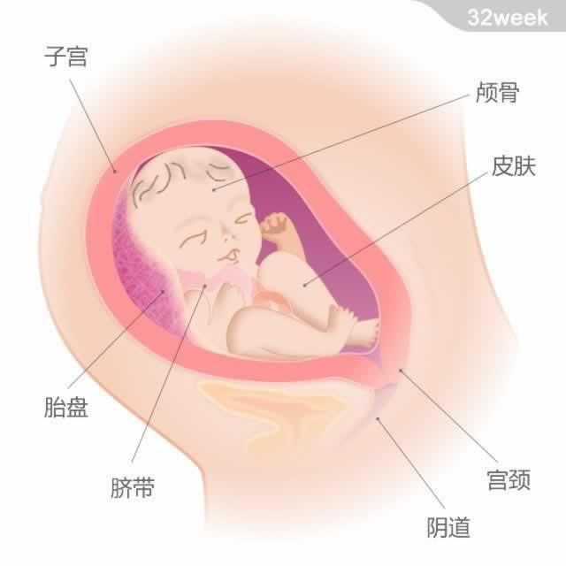

 宝宝的重量约为2千克，从头部到臀部的长度约为30厘米。 本周，子宫内的羊水量达到了高峰，大约是900~1000毫升。因为宝宝会做吞咽羊水的动作，会喝下其中的一半，因此在孕晚期，子宫内的羊水量会稍微变少一点。因为脂肪在皮下沉积，宝宝的皮肤不再像此前那样透明，而且不再皱巴巴的了，显得丰满圆润。 他的大部分骨头已经变硬，但头骨除外。尚未闭合的柔软头骨将有助于宝宝在生产时顺利通过狭窄的产道。此时的颅骨由分离的骨板组成，之间存在着缝隙。这些缝隙直到出生后9-18个月才会完全闭合。